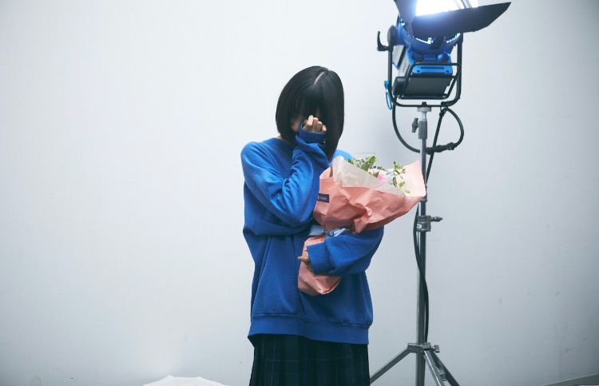

2019/0718Thuやきそばとパンっていう組み合わせ
トイストーリー4観たいなあ☺︎
写真を見返してたらね、4月くらいにパネルが展示されててそこで写真を撮ってるドヤ顔のわたしがでてきました。笑

意気揚々と。笑
この写真撮ってからもう3カ月経ってるのかあ...
時間が経つのは早いですね...

観たい映画が多すぎて、、、
時間がほしいな〜
ホットギミック も観に行かなきゃ^_^✨
梅ちゃんもしおりも観に行ってくれて嬉しい！
わたしも久々に初ちゃんに会いたいな

皆さまも是非劇場でご覧ください
よろしくです！
(原作でも映画でも、よろしくですって言ってるシーンがあるよ)

今年や来年はもっともっとドラマや映画のお仕事がしたいなぁ。。
どんな役も挑戦してみたいです
挑戦って楽しい、
むむむ
では、撮影戻ります〜またね〜
やきそばパンたべるよ〜
2019/07/18 22:06


コメント(331)
トイ4はみおなちゃんに合うかもしれないなぁ。
いや、わからないなぁ。
今度は西洋のホラー映画として主演をしてもらいたいです。
みおなさま～ファイトーいっぱ～つ！
公開終わるまでにあと2回ホットギミック行かなきゃー
ムビチケ2枚あるから消化しなきゃ！
あ、2枚ってことは…未央奈一緒に行く？←行けたら最高
というわけで、日曜日見てくるねー
最近、未央奈に影響されてか、映画館で映画を観ることが増えてます！
明後日はミッドナイトで天気の子を観に行くよ！
もう座席予約もした！
スクリーンで観ることは少なかったけど、ここ最近は逆にスクリーンで見なきゃって思えるようになってきたんだよね。
映画、具体的に何が観たいのかはわからないけど、観に行けたらいいね。
焼きそばパンね～
時々食べると身に染みて美味しく
感じる時あるよね笑
わかるわかる！
ホットギミックの初ちゃんで
癒されたり考えさせられたり…
いい映画だったよ～！
堀ちゃん、今撮影なんだね！
体調1番で頑張ってね～！
自分は今、ロンドンに来てます！
来週のレコメンでまたメール
送るんでぜひ電話も！
それでは次回の更新も
楽しみにしてますよ～！！
では！
おやすみおな～！
トイストーリー4観たいね。
時間が経つの早いよねー。
未央奈にたくさん映画を観られる時間があるといいな。
メンバーもホットギミック見に行ってくれるの嬉しいね。僕も何回も見たけどまた見に行くよ。
このくすみブルーの服すごく似合ってて可愛いよね。
僕もドラマや映画の未央奈がもっと見たいなあ。色々な役に挑戦したら、未央奈の色々な魅力がもっと発見できそうだし。
このブログ撮影の合間に書いてくれたの？筆マメな未央奈本当に大好き！
未央奈とやきそばパン食べたい！
では！
トイストーリー昔から見てたから4も観たいなー
ダイナーも面白そうだからそっちも観たいって思ってる！
トイストーリー4見たいよね(*^^*)
未央奈ちゃん凄く可愛い(//∇//)
時間が経つの早いね(^_^;)
観たい映画全部観れると良いね♪
女優の未央奈ちゃんもっと見たいな～(≧∇≦)
色んな役の未央奈ちゃん凄く見たい(*^^*)
撮影頑張ってね！
またね♪
未央奈ちゃん神推し
秀喜より！(≧▽≦)
トイ・ストーリー4僕も観たい！
焼きそばパン食べたくなってきた。
最近観たい映画が多くて困るよね。
私もテスト勉強が忙しくて観ることができないのでテストが終わったら観るつもりです。また、土曜日に福岡でのライブ蒸し暑いと思いますが熱中症には気をつけて頑張ってね。
ホットギミックまだ観に行けてないんよね、
早く行きたいわ～(笑)
これから仕事？俺も夜勤やから頑張ろな～
いつでも応援してるからね^^*
遅くまで仕事、大変そうですね！(‘д‘ )
体調に気を付けて！(σ*´∀｀)
見たい映画が映画館で見れるといいですね！
外でコメント書いてるので蚊と戦いながらです。
んじゃね～！Σ⊂(ﾟДﾟ ) 美しいよ～！
ホットギミック忙しくて、見に行けてない...
なるべく、すぐに見に行きます！
これからも、女優としての活躍も期待してます！
頑張ってください！
未央奈ちゃんに質問です。
映画やドラマのオファーが来たら、どんな役をやりたいですか？
教えてください！
今日も一日お疲れ様！
いよいよ、明日、ライブですね！
頑張ってください！応援しています！
ライスカレー！
たくあん！
フライドチキン！
から揚げいぇい！
から揚げいぇい！
からからからからから揚げ姉妹！
ってブログのタイトル見た瞬間思ってしまった.....笑
トイストーリー4見たいなぁー
仕事遅くまで頑張ってるねー
私も頑張らないとっ...(^o^)
ブログ更新ありがとう～
今れなさんのTVドラマを観てるとこ
ほりっぴ～をTV連ドラで観たいよ
コメディ、ミステリー
どんな色にも染まるほりっぴ～の演技が大好きなんだ
トイストーリー4みたよー
面白かったなぁ
ぜひ見てください
土曜から福岡でライブだね。
個人の仕事もあって大変だと思うけど、体に気をつけて！
トイストーリーめちゃめちゃイイっすよね！
ホットギミックもまだ観れていないので観たいのです！
焼きそばパン好きです！食べたいです！
これからも体調に気をつけて頑張ってください！！
トイストーリー僕も観たいです！
焼きそばパン美味しいですよねー(^-^)
僕は麺類の中で焼きそばが一番好きです！
未央奈ちゃんは麺類何が一番好きですか？
未央奈ちゃんかわいすぎて心臓がもちません
本当にかわいい
かわいいという言葉ではあらわせないくらいかわいい
全国ツアーがんばってね
大好き!
ブログありがとう！
博多に向けて、今宵も終電まで仕事だよ〜
体調悪いよ〜笑笑
ホットギミック は4回観たけど、
また、初ちゃんロスだよ〜
どうにかしてけろ〜
でも、今週末は博多で
みおに会えるから大丈夫だね〜
ってか、台風だけど、土曜の朝のJAL307便は飛ぶんだろうか？
他の便になったらテンション落ちるなぁ〜
まぁ、飛行機が落ちるよりかはいいけどね〜笑笑
アテンションプリーズ♪
アッチョンブリケ！
笑笑
嗚呼、寝不足でテンションがおかしく納豆
。。。。。
では、
体調に気をつけてね☆
博多では、菊五郎さんとじーま君と
志賀島に泊まっているので
遊びに来てね☆笑
金印が発掘された島なんだよ〜
ついでに、よだっちょも発掘された島だね〜笑笑
あと、博多らーめんは、「はし本」が美味いと思うよ〜
もつ鍋は、梟(ふくろう)が大人の味らしい♪
みおがホットギミックのアピールで行った中華店にも
行きたいけど、店舗移転しているかなぁ？
たしか、予約が必要だったと思う。。。
チャーハンは美味しかった？
とりあえず、まだキタック中だけど、
帰ったらすぐ寝る！
ほんと、体調ヤバし。。。
博多では、運転しなきゃだし〜
台風でも、志賀島の道は走れるのかなぁ〜
不安だ〜
不安だ〜すの犬だ〜笑笑
では、またね☆
いい夢みおな〜♪
わたる⊿
ブログ更新ありがとうございます。
「やきそばパン」というと、焼きそばパンそのものより、私たちは、「あの歌のあれ」を思い出しますね。から揚げ姉妹の「無表情」の合いの手です。４期生の矢久保ちゃんが「工事中」で見せてくれたあれですね。
「ホットギミック」、早くもう一度見たいと思いつつも、先週は「いつのまにかここにいる」を観てきました。幸い人気のあのパンフレットも手に入り、ヤレヤレでした。そうなんだ、２期生愛だけでなく、かなりん愛に溢れていましたね。「サンエト」、そういう意味でもすばらしいユニットでしたね。またどこかで「復活」を祈りたいと思います。
「撮影」のお仕事って何かな？ こちらも楽しみにしたいと思います。
ホットギミック観に行きたいです
ガンバってくださいね！
焼きそばパンマンかっこいいよね〜
カウボーイだ〜
夜中になってしまったです。
雨が結構降ってるなあ。
出勤時も降ってるやろな。
さて、ホットギミック。
ごめんね。まだ観てないねん。
近々観に行こうと思います☺
堀ちゃん一緒に行きますか？(笑)
なんてね。(笑)
年内でなくても、ドラマや映画チャレンジというか出演出来たらエエね✨
いろんな意味で自分にもプラスになるやろうし☺
出来る範囲でのチャレンジしようと思う事は俺はポジティブで良いと思うよ。
なかなか乃木坂との両立も難しいやろうけど。
今は４期生を支える事も含めて新しい乃木坂のスタートに力を注いだら良いかなと思ったよ☺
ごめんね、あくまで個人的意見やから！
ではではまたね✨
体調気をつけてくださいね✨
あと、やきそばぱんと聞いて、どうしても、けいおん！を思い出してしまった。
8年～9年前かな？
深夜に放送していたけど録画などしたりしてみてました。曲もすきで当時は良く聴いていたかな？
ニュースを見ていていろんな感情が込み上げ思わず涙が出ました。
堀ちゃんのブログやのにごめんなさい。
ご冥福をお祈りすると共に、早くの快復を願いたいです。
ほなね、堀ちゃん。
頑張ってな☺
先週、ホットギミック観てきました。
観るたびにいろいろと発見することが出来ました。
今週末は、福岡公演ですね。楽しんでください。
ブログ更新待ってます。
焼きそばパン、美味しいよね。
そして、映画いっぱいみて楽しんでね。
ホットギミック 二回見たよー
1回目は、はつみちゃんとして観れ2回目は未央奈として観れた
これからもずっと応援してます、体調気をつけてください
一昨日トイストーリー観ました！
笑えるところもあり感動するところもありとても面白かったです。
これからも沢山のお仕事頑張ってください！
未央奈の解説（解釈）とかあったら楽しそう〜！
さいしょからー！
みおなちゃん、あんまり無理しないでね
応援してる
ホットギミックまだみにいけてない、、みなければ！(照明アシスタントに自分の同期いました)
焼きそばパンとか、からあげ姉妹思い出す
755で言ってたPretenderを早速買って聞きこんでます。コンフィデンスマンのエンディングで好きだったんですけど忘れてたので助かりました。
ドヤ顔の堀さんも可愛いですね。パネル化して展示すべきです。
では、挑戦もやきそばパンもライブも頑張ってくださいね。
ドヤ顔で写真を撮ってる未央奈、楽しそうだね～笑
3ヶ月前は、ホットギミックの公開が
楽しみで楽しみで仕方なかったなー
そこから公開日まであっという間で、
実際にホットギミックを観たときは、
未央奈初出演・初主演の映画を大画面で観られた
こと自体が凄く嬉しくて、
はつみを演じきった未央奈自身にもの凄く感動して、
作品の世界観と内容にぐらぐら心を動かされて
喜びと感動に満ちあふれた最高の日だったな～
この先も、未央奈が出演するドラマや映画を
ずっと観ていきたいな。
ホットギミックを観てから、その気持ちが
もっともっと強くなったよ！
これからも楽しみにしてるね！！
コメントする